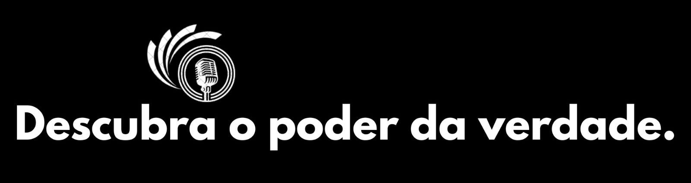

navio colide com ponte e estrutura desaba nos EUA; duas pessoas foram resgatadas

 Todo o tráfego está sendo desviado, disse a Autoridade de Transporte de Maryland (MTA), e não está claro se alguém ficou ferido.
Todo o tráfego está sendo desviado, disse a Autoridade de Transporte de Maryland (MTA), e não está claro se alguém ficou ferido.
Equipes de resgate estão procurando pessoas no rio Patapsco depois que vários veículos caíram na água.
O secretário de Transportes de Maryland, Paul Wiedefeld, disse que oito pessoas estavam na Key Bridge no momento do seu colapso.
Falando a repórteres em entrevista coletiva, Wiedefeld disse que duas dessas pessoas foram encontradas – uma está no hospital, a outra está bem e a busca pelas outras seis continua.
O chefe do Departamento de Bombeiros de Baltimore, James Wallace, disse que as duas pessoas resgatadas foram retiradas da água na manhã desta terça-feira (26), uma sem ferimentos e outra que foi transferida para o hospital em estado grave.
“Ainda estamos em uma postura ativa de busca e resgate neste momento”, disse Wallace.
Wallace acrescentou que a tripulação permanece a bordo do navio e está se comunicando com a Guarda Costeira dos EUA. Ele acrescentou que os serviços de emergência estão olhando os relatórios de que havia trabalhadores na ponte no momento do incidente.
O prefeito de Baltimore, Brandon Scott, também descreveu o incidente como uma “tragédia impensável” e ofereceu suas orações por todos os afetados, bem como seus agradecimentos aos socorristas.
Baixa temperatura
Kevin Cartwright, diretor de comunicações do Corpo de Bombeiros da cidade de Baltimore, disse à CNN que eles estão trabalhando com a Guarda Costeira dos EUA e uma equipe de mergulhadores está no rio para operações de busca e resgate, com temperaturas ao redor do porto em torno de -1ºC.
O âncora da CNN, Derek Van Dam, especialista em meteorologia, explicou que existe uma janela de uma a três horas em que o corpo poderia suportar temperaturas tão frias. Ele acrescentou que os mergulhadores imediatamente entraram na água para iniciar a operação de busca e resgate.
Veículos na água
O Corpo de Bombeiros informou que foram detectados veículos submersos na água.
“Nosso sonar detectou a presença de veículos submersos na água”, disse o chefe dos bombeiros, James Wallace. Mas ele não soube precisar o número.
Wallace afirmou que os serviços de emergência estão usando sonar, drones e tecnologia infravermelha como parte da busca por pessoas e veículos que podem ter caído da Ponte Key no rio Patapsco.
O vídeo da colisão mostra um grande barco indo diretamente em direção a uma das colunas de suporte da ponte antes da colisão, fazendo com que um enorme trecho da ponte caísse na água abaixo em poucos segundos.
O impacto provocou imediatamente o colapso de partes adjacentes da ponte.
O acidente lançou grandes nuvens de fumaça e fogo no ar e parte da ponte pareceu desabar na frente do barco, mostraram imagens de vídeo. A fumaça escura continuou a subir no ar por vários minutos.
A ponte de 2,5 quilômetros e 4 pistas se estende sobre o rio Patapsco e serve como travessia externa do porto de Baltimore e uma ligação essencial da Interstate-695, ou Baltimore Beltway.
Os dados de rastreamento de navios do LSEG mostram um navio porta-contêineres com bandeira de Cingapura, o Dali, no local ao longo da Key Bridge onde ocorreu o acidente.
Os dados de rastreamento de navios do LSEG mostram um navio porta-contêineres com bandeira de Cingapura, o Dali, no local ao longo da Key Bridge onde ocorreu o acidente.
A Synergy disse que emitiria uma declaração sobre o incidente. A Reuters não conseguiu entrar em contato imediatamente com Grace Ocean para comentar.
Veja tambem as categoria